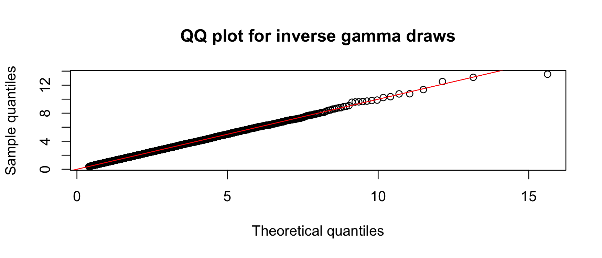
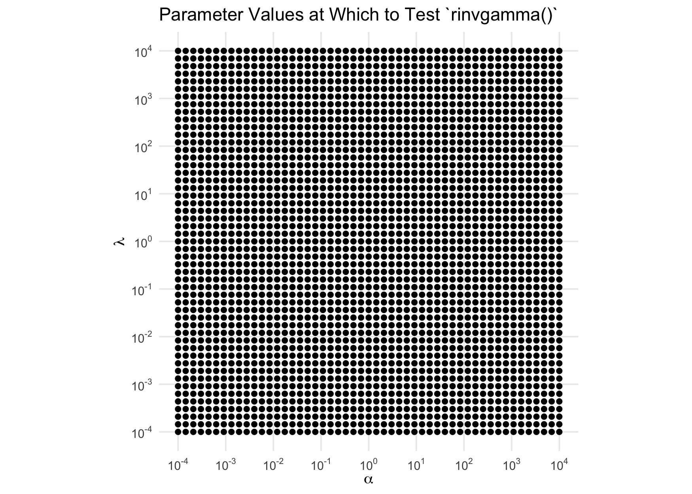
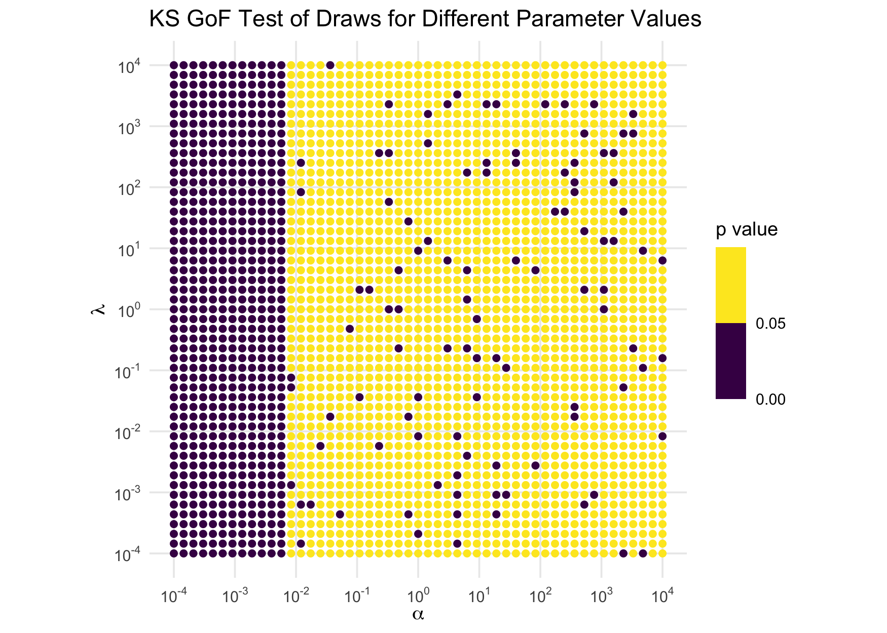

invgamma implements the [dpqr] statistics functions for the inverse gamma distribution in R. It is ideal for using in other packages since it is lightweight and leverages the [dpqr]gamma() line of functions maintained by CRAN.
Please see the section on parameterizations below to avoid any unintended mistakes!
Getting invgamma
There are two ways to get invgamma. For the CRAN version, use
install.packages("invgamma")For the development version, use
# install.packages("devtools")
devtools::install_github("dkahle/invgamma")The [dpqr]invgamma() functions
The functions in invgamma match those for the gamma distribution provided by the stats package. Namely, it uses as its density f(x) = (b^a / Gamma(a)) x^-(a+1) e^(-b/x), where a = shape and b = rate.
The PDF (the f(x) above) can be evaluated with the dinvgamma() function:
library("invgamma")
x <- seq(0, 5, .01)
shape <- 7; rate <- 10
plot(x, dinvgamma(x, shape, rate), type = "l")
The CDF can be evaluated with the pinvgamma() function:
f <- function(x) dinvgamma(x, shape, rate)
q <- 2
integrate(f, 0, q)
# 0.7621835 with absolute error < 7.3e-05
(p <- pinvgamma(q, shape, rate))
# [1] 0.7621835The quantile function can be evaluated with qinvgamma():
qinvgamma(p, shape, rate) # = q
# [1] 2And random number generation can be performed with rinvgamma():
rinvgamma() can be used to obtain a Monte Carlo estimate of the probability given by pinvgamma() above:
Moreover, we can check the consistency and correctness of the implementation with first a kernel density estimate…

…and also a quantile plot…
qqplot( "x" = ppoints(n) |> qinvgamma(shape, rate), "y" = draws,
xlab = "Theoretical quantiles", ylab = "Sample quantiles",
main = "QQ plot for inverse gamma draws"
)
abline(0, 1, col = "red")
Both of these indicate that the samplers are consistent. As an inferential alternative, we can use a KS test:
The [dpqr]invchisq() and [dpqr]invexp() functions
The gamma distribution subsumes the chi-squared and exponential distributions, so it makes sense to include the *invchisq() and *invexp() functions in invgamma. Their implementations, however, wrap *chisq() and *exp(), not *invgamma().
A note on parameterizations
As detailed here, the parameterizations of the functions in this package cue off of their corresponding non-inverse distributions from stats. This commonly causes the confusion that, for example, the parameter rate in dinvgamma() is the rate parameter of the inverse gamma distribution. It is not! It is the rate parameter of the corresponding gamma distribution. Please take care with this distinction.
A note on numerics
invgamma was intended to be a lightweight and simple, largely self-maintaining package implementing the inverse gamma, inverse chi-square, and inverse exponential distributions. It uses the transformation theorem in all cases.
One of the challenges to using naive implementations of distributions is that their numerics may not work well. Arithmetic on a computer is not the same as arithmetic in theory, the kind that you meet in math classes, and as a consequence the best computer implementations of mathematical facts/algorithms need to be tailored to the specific cases at hand.
In January 2023 I did a little poking around into this for rinvgamma() and found that it performs poorly when the shape parameter is less than .001 or so. The resulting distributions are very heavy-tailed, and the draws from these distributions returned by rinvgamma() are so large that they get rounded to either very large numbers (where the floating point representation of numbers does not provide many numbers) or infinity. Here’s an example:
rinvgamma(10, shape = .001, rate = 7)
# Warning: `rinvgamma()` is unreliable for `shape` <= .01.
# [1] Inf Inf 1.192692e+213 Inf 3.289218e+167
# [6] Inf Inf 7.899428e+197 3.938612e+97 InfNotice that rinvgamma() issues a warning in this circumstance; this is the general behavior of invgamma: if a particular parameter configuration is known to not produce valid results, a warning is issued.
KS tests for sampling accuracy
rinvgamma()
Here is a more detailed Monte Carlo investigation that checks sampler quality using the Kolmogorov-Smirnov test.
First, we write a basic Monte Carlo test for the sampler that works by generating a large (n = 1e6) sample of draws from the inverse gamma distribution for a given shape and rate:
test_invgamma <- function(shape, rate, n = 1e5) {
draws <- rinvgamma(n, shape, rate)
ks.test(draws, function(p) pinvgamma(p, shape, rate))$p.value
}
test_invgamma(3, 7)
# [1] 0.3464601The function returns the -value associated with the KS test, so “small” values suggest a departure from the null hypothesis that the distribution is from the corresponding inverse gamma distribution: the sampler is performing poorly. Under the null hypothesis, the -value has an approximate uniform distribution, a fact that can be found in most advanced mathematical statistics books, so we would expect some proportion to be small regardless.
We want to see the behavior of the sampler rinvgamma() across a wide array of parameter values. To do this, we use a range of parameter values running from small () to large ():
# load tidyverse and related
library("tidyverse"); library("patchwork"); library("scales", warn.conflicts = FALSE)
theme_set(theme_minimal()); theme_update(panel.grid.minor = element_blank())
# load furrr for parallel computing
library("furrr"); furrr_options(seed = TRUE)
# <furrr_options>
plan(multisession(workers = parallelly::availableCores()))
# set parameter values to test
n_grid <- 51
param_vals <- 10^seq(-4, 4, length.out = n_grid)
(param_grid <- expand_grid("shape" = param_vals, "rate" = param_vals))
# # A tibble: 2,601 × 2
# shape rate
# <dbl> <dbl>
# 1 0.0001 0.0001
# 2 0.0001 0.000145
# 3 0.0001 0.000209
# 4 0.0001 0.000302
# 5 0.0001 0.000437
# 6 0.0001 0.000631
# 7 0.0001 0.000912
# 8 0.0001 0.00132
# 9 0.0001 0.00191
# 10 0.0001 0.00275
# # ℹ 2,591 more rowsHere’s what the experiment’s design space looks like:
# make axes labeller
fmt <- scales::math_format(10^.x)
# make plot
ggplot(param_grid, aes(shape, rate)) +
geom_point() +
scale_x_log10(expression(alpha), n.breaks = 10, labels = fmt(-5:5)) +
scale_y_log10(expression(lambda), n.breaks = 10, labels = fmt(-5:5)) +
labs("title" = "Parameter Values at Which to Test `rinvgamma()`") +
coord_equal()
Now, we run our test for each point in the design space in parallel. (Note: we’ve suppressed warnings here that are relevant.)
param_grid <- param_grid |>
mutate(p_val = future_map2_dbl(shape, rate, test_invgamma))And we visualize the distribution of the -values over that space, binning the colors to at .05 to highlight the rejections of the tests at the 5% level:
ggplot(param_grid, aes(shape, rate, color = p_val)) +
geom_point() +
scale_x_log10(expression(alpha), n.breaks = 10, labels = fmt(-5:5)) +
scale_y_log10(expression(lambda), n.breaks = 10, labels = fmt(-5:5)) +
scale_color_binned(breaks = c(0, .05, 1)) +
labs(color = "p value") +
labs("title" = "KS GoF Test of Draws for Different Parameter Values") +
coord_equal()
If the sampler were working correctly, the -values would be approximately IID uniform(0,1), so we would expect about 5% of the points to be purple, and those 5% would be uniformly distributed over the whole space with no patterns. Obviously, that’s not the case: when the shape parameter is small, the test is always rejecting. Clearly, when shape is small, the sampler does not work well. Further investigations reveal that, as an easy rule, the sampler can be considered unreliable for shape values less than 0.01. As a consequence, rinvgamma() issues a warning in those circumstances. (This warning has been suppressed in the above computations.)
rinvchisq() and rinvexp()
Similar investigations using the inverse chi-squared and inverse exponential reveal that rinvchisq() should not be trusted when df <= .01 and ncp <= 10 and rinvexp() is trustworthy for all values. Here is the illustration for the inverse chi-squared:
test_rinvchisq <- function(df, ncp, n = 1e5) {
draws <- rinvchisq(n, df, ncp)
ks.test(draws, function(p) pinvchisq(p, df, ncp))$p.value
}
expand_grid("df" = param_vals, "ncp" = param_vals) |>
mutate("p_val" = future_map2_dbl(df, ncp, test_rinvchisq)) |>
ggplot(aes(df, ncp, color = p_val)) +
geom_point() +
scale_x_log10(expression(nu), n.breaks = 10, labels = fmt(-5:5)) +
scale_y_log10("ncp", n.breaks = 10, labels = fmt(-5:5)) +
scale_color_binned(breaks = c(0, .05, 1)) +
labs(color = "p value") +
coord_equal()
And here is the illustration for the inverse exponential:
test_rinvexp <- function(rate, n = 1e5) {
draws <- rinvexp(n, rate = rate)
ks.test(draws, function(p) pinvexp(p, rate))$p.value
}
tibble("rate" = 10^seq(-4, 4, length.out = 2*n_grid)) |>
mutate("p_val" = future_map_dbl(rate, test_rinvexp)) |>
ggplot(aes(rate, 0, color = p_val)) +
geom_point() +
scale_x_log10(expression(lambda), n.breaks = 10, labels = fmt(-5:5)) +
scale_color_binned(breaks = c(0, .05, 1), guide = FALSE) +
theme(axis.text.y = element_blank(), axis.title.y = element_blank(),
panel.grid.major.y = element_blank()) +
coord_equal()